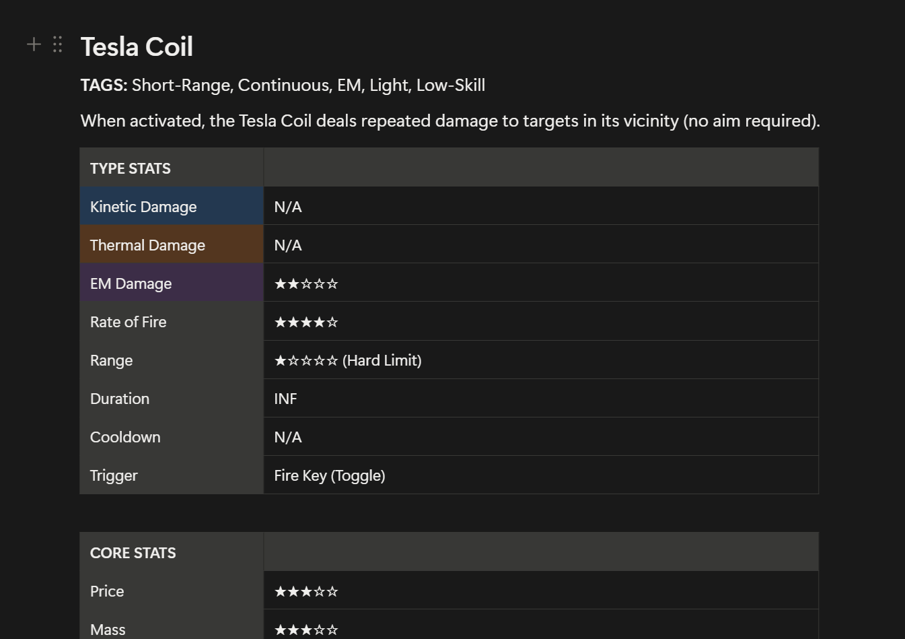

I helped design the core weapon system for the game, created detailed specs for each weapon type, and implemented the first two weapon variants in-engine, providing a stable framework for other engineers and designers to build off of.
One of the core skills I learned through this process was how to connect Unreal's Gameplay Ability System with a C++ backend and networking framework. Because each ship is custom-built by players, I had to develop creative solutions, not just copying basic GAS patterns but finding strategic ways to get a reference from each weapon to the central Ability System Component or dynamically bind new weapons to the input system as they were created.
In the end, I was able to successfully set up a backend framework that allowed other engineers to quickly create new weapons and have them smoothly work with both the GAS system and multiplayer replication.
The game involves a robust ship-building system, where each part you place is affected by every other part of the ship. To support this, I built a backend framework to track materials for the building system and energy for part usage, including multiplayer synchronization and propagation across the ship graph.
A core feature of the energy system was making it fully modular, so that every part is standardized and automatically works with the central EnergyManager. To accomplish this, I built a reusable component that supports multiple types of energy users while remaining easily editable by designers, allowing the team to quickly change values and add new parts within a single interface.
I was initially brought on as a designer, but shifted toward a more technical role as the project went on. This meant that I had a strong understanding of both the design goals and engineering framework, which put me in a unique position to bridge communication between the two teams.
One way I did this was with documentation, such as the detailed spec I put together for each weapon in the game, built to be easily by engineers but quickly editable by designers. Building in technical information like fire rate and trigger method allowed engineers to quickly implement new weapons and understand how they fit into the existing cast, while listing values as stars instead of static numbers gave them the freedom to tweak these values in response to real-time game feel.
